上文中解决了域名和环境问题，本文先实现查询功能，主要涉及到：
- vue的axios请求
- 跨域问题
- 后端的mvc模型
- 通用mapper
1.开发API文档
一般而言都是api先行，再前端后台分离开发。api文档大致内容如下：

2.实现商品分类查询
商城的核心自然是商品，而商品多了以后，肯定要进行分类，并且不同的商品会有不同的品牌信息，我们需要依次去完成：商品分类、品牌、商品的开发。
2.1.导入数据
首先导入课前资料提供的sql：
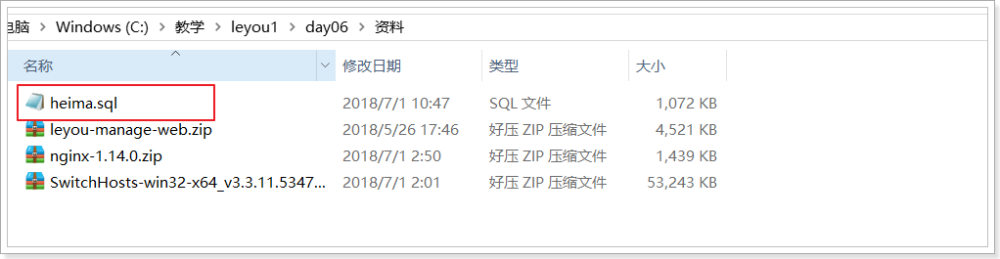
我们先看商品分类表：

CREATE TABLE `tb_category` (
`id` bigint(20) NOT NULL AUTO_INCREMENT COMMENT '类目id',
`name` varchar(20) NOT NULL COMMENT '类目名称',
`parent_id` bigint(20) NOT NULL COMMENT '父类目id,顶级类目填0',
`is_parent` tinyint(1) NOT NULL COMMENT '是否为父节点，0为否，1为是',
`sort` int(4) NOT NULL COMMENT '排序指数，越小越靠前',
PRIMARY KEY (`id`),
KEY `key_parent_id` (`parent_id`) USING BTREE
) ENGINE=InnoDB AUTO_INCREMENT=1424 DEFAULT CHARSET=utf8 COMMENT='商品类目表，类目和商品(spu)是一对多关系，类目与品牌是多对多关系';
因为商品分类会有层级关系，因此这里我们加入了parent_id字段，对本表中的其它分类进行自关联。
2.2.实现功能
在浏览器页面点击“分类管理”菜单：
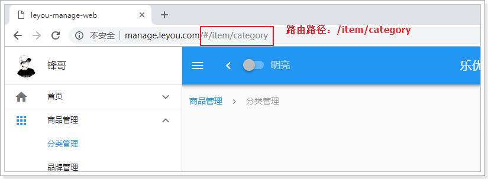
根据这个路由路径到路由文件（src/route/index.js），可以定位到分类管理页面：
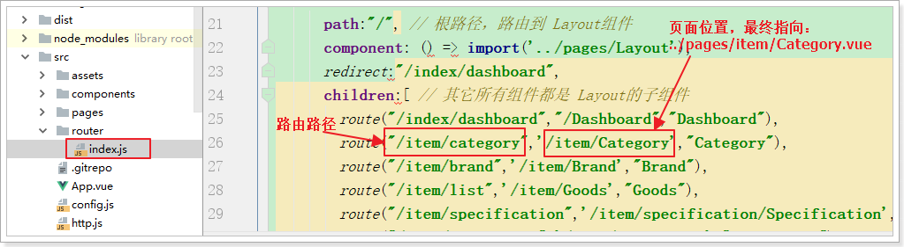
由路由文件知，页面是src/pages/item/Category.vue
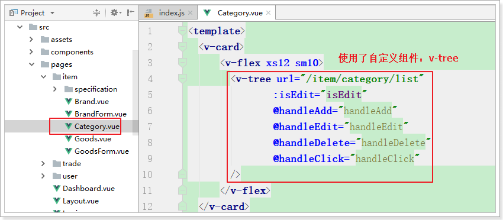
商品分类使用了树状结构，而这种结构的组件vuetify并没有为我们提供，这里自定义了一个树状组件。不要求实现或者查询组件的实现，只要求可以参照文档使用该组件即可：
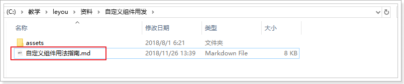
2.2.1.url异步请求
点击商品管理下的分类管理子菜单，在浏览器控制台可以看到：

页面中没有，只是发起了一条请求：http://api.leyou.com/api/item/category/list?pid=0
大家可能会觉得很奇怪，我们明明是使用的相对路径：/item/category/list，讲道理发起的请求地址应该是：
http://manage.leyou.com/item/category/list
但实际却是：
http://api.leyou.com/api/item/category/list?pid=0
这是因为，我们有一个全局的配置文件，对所有的请求路径进行了约定：
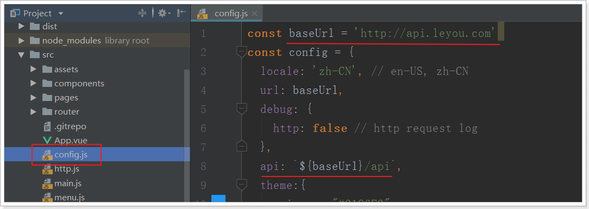
路径是http://api.leyou.com，并且默认加上了/api的前缀，这恰好与我们的网关设置匹配，我们只需要把地址改成网关的地址即可,因为我们使用了nginx反向代理，这里可以写域名。
接下来，我们要做的事情就是编写后台接口，返回对应的数据即可。
2.2.2.实体类
在leyou-item-interface中添加category实体类：

内容：
@Table(name="tb_category")
public class Category {
@Id
@GeneratedValue(strategy=GenerationType.IDENTITY)
private Long id;
private String name;
private Long parentId;
private Boolean isParent; // 注意isParent生成的getter和setter方法需要手动加上Is
private Integer sort;
// getter和setter略
}
需要注意的是，这里要用到jpa的注解，因此我们在leyou-item-iterface中添加jpa依赖
<dependency>
<groupId>javax.persistence</groupId>
<artifactId>persistence-api</artifactId>
<version>1.0</version>
</dependency>
2.2.3.controller
编写一个controller一般需要知道四个内容：
- 请求方式：决定我们用GetMapping还是PostMapping
- 请求路径：决定映射路径
- 请求参数：决定方法的参数
- 返回值结果：决定方法的返回值
在刚才页面发起的请求中，我们就能得到绝大多数信息：

请求方式：Get，插叙肯定是get请求
请求路径：/api/item/category/list。其中/api是网关前缀，/item是网关的路由映射，真实的路径应该是/category/list
请求参数：pid=0，根据tree组件的说明，应该是父节点的id，第一次查询为0，那就是查询一级类目
返回结果：？？
根据前面tree组件的用法我们知道，返回的应该是json数组：
[ { "id": 74, "name": "手机", "parentId": 0, "isParent": true, "sort": 2 }, { "id": 75, "name": "家用电器", "parentId": 0, "isParent": true, "sort": 3 } ]对应的java类型可以是List集合，里面的元素就是类目对象了。也就是
List<Category>
添加Controller：
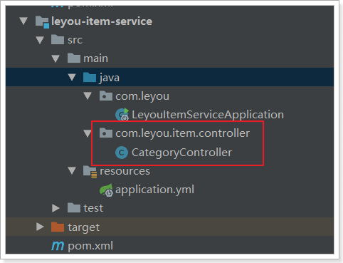
controller代码：
@Controller
@RequestMapping("category")
public class CategoryController {
@Autowired
private CategoryService categoryService;
/**
* 根据父id查询子节点
* @param pid
* @return
*/
@GetMapping("list")
public ResponseEntity<List<Category>> queryCategoriesByPid(@RequestParam("pid") Long pid) {
if (pid == null || pid.longValue() < 0) {
// 响应400，相当于ResponseEntity.status(HttpStatus.BAD_REQUEST).build();
return ResponseEntity.badRequest().build();
}
List<Category> categories = this.categoryService.queryCategoriesByPid(pid);
if (CollectionUtils.isEmpty(categories)) {
// 响应404
return ResponseEntity.notFound().build();
}
return ResponseEntity.ok(categories);
}
}
2.2.4.service
一般service层我们会定义接口和实现类，不过这里我们就偷懒一下，直接写实现类了：

@Service
public class CategoryService {
@Autowired
private CategoryMapper categoryMapper;
/**
* 根据parentId查询子类目
* @param pid
* @return
*/
public List<Category> queryCategoriesByPid(Long pid) {
Category record = new Category();
record.setParentId(pid);
return this.categoryMapper.select(record);
}
}
2.2.5.mapper
我们使用通用mapper来简化开发：
public interface CategoryMapper extends Mapper<Category> {
}
要注意，我们并没有在mapper接口上声明@Mapper注解，那么mybatis如何才能找到接口呢？
我们在启动类上添加一个扫描包功能：
@SpringBootApplication
@EnableDiscoveryClient
@MapperScan("com.leyou.item.mapper") // mapper接口的包扫描
public class LeyouItemServiceApplication {
public static void main(String[] args) {
SpringApplication.run(LeyouItemServiceApplication.class, args);
}
}
2.2.6.启动并测试
我们不经过网关，直接访问：http://localhost:8081/category/list
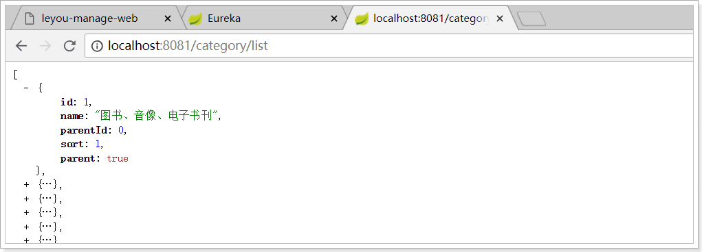
然后试试网关是否畅通：http://api.leyou.com/api/item/category/list
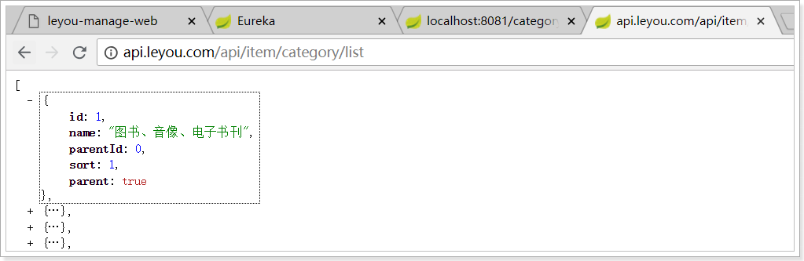
一切OK！
然后刷新后台管理页面查看：

发现报错了！
浏览器直接访问没事，但是这里却报错，什么原因？
这其实是浏览器的同源策略造成的跨域问题。
3.跨域问题
跨域：浏览器对于javascript的同源策略的限制 。
以下情况都属于跨域：
| 跨域原因说明 | 示例 |
|---|---|
| 域名不同 | www.jd.com 与 www.taobao.com |
| 域名相同，端口不同 | www.jd.com:8080 与 www.jd.com:8081 |
| 二级域名不同 | item.jd.com 与 miaosha.jd.com |
如果域名和端口都相同，但是请求路径不同，不属于跨域，如：
www.jd.com/item
www.jd.com/goods
http和https也属于跨域
而我们刚才是从manage.leyou.com去访问api.leyou.com，这属于二级域名不同，跨域了。
3.1.为什么有跨域问题？
跨域不一定都会有跨域问题。
因为跨域问题是浏览器对于ajax请求的一种安全限制：一个页面发起的ajax请求，只能是与当前页域名相同的路径，这能有效的阻止跨站攻击。
因此：跨域问题 是针对ajax的一种限制。
但是这却给我们的开发带来了不便，而且在实际生产环境中，肯定会有很多台服务器之间交互，地址和端口都可能不同，怎么办？
3.2.解决跨域问题的方案
目前比较常用的跨域解决方案有3种：
Jsonp
最早的解决方案，利用script标签可以跨域的原理实现。
限制：
- 需要服务的支持
- 只能发起GET请求
nginx反向代理
思路是：利用nginx把跨域反向代理为不跨域，支持各种请求方式
缺点：需要在nginx进行额外配置，语义不清晰
CORS
规范化的跨域请求解决方案，安全可靠。
优势：
- 在服务端进行控制是否允许跨域，可自定义规则
- 支持各种请求方式
缺点：
- 会产生额外的请求
我们这里会采用cors的跨域方案。
3.3.cors解决跨域
5.3.1.什么是cors
CORS是一个W3C标准，全称是”跨域资源共享”（Cross-origin resource sharing）。
它允许浏览器向跨源服务器，发出XMLHttpRequest请求，从而克服了AJAX只能同源使用的限制。
CORS需要浏览器和服务器同时支持。目前，所有浏览器都支持该功能，IE浏览器不能低于IE10。
浏览器端：
目前，所有浏览器都支持该功能（IE10以下不行）。整个CORS通信过程，都是浏览器自动完成，不需要用户参与。
服务端：
CORS通信与AJAX没有任何差别，因此你不需要改变以前的业务逻辑。只不过，浏览器会在请求中携带一些头信息，我们需要以此判断是否允许其跨域，然后在响应头中加入一些信息即可。这一般通过过滤器完成即可。
3.3.2.原理有点复杂
浏览器会将ajax请求分为两类，其处理方案略有差异：简单请求、特殊请求。
3.3.2.1.简单请求
只要同时满足以下两大条件，就属于简单请求。：
（1) 请求方法是以下三种方法之一：
- HEAD
- GET
- POST
（2）HTTP的头信息不超出以下几种字段：
- Accept
- Accept-Language
- Content-Language
- Last-Event-ID
- Content-Type：只限于三个值
application/x-www-form-urlencoded、multipart/form-data、text/plain
当浏览器发现发起的ajax请求是简单请求时，会在请求头中携带一个字段：Origin.

Origin中会指出当前请求属于哪个域（协议+域名+端口）。服务会根据这个值决定是否允许其跨域。
如果服务器允许跨域，需要在返回的响应头中携带下面信息：
Access-Control-Allow-Origin: http://manage.leyou.com
Access-Control-Allow-Credentials: true
Content-Type: text/html; charset=utf-8
- Access-Control-Allow-Origin：可接受的域，是一个具体域名或者*（代表任意域名）
- Access-Control-Allow-Credentials：是否允许携带cookie，默认情况下，cors不会携带cookie，除非这个值是true
有关cookie：
要想操作cookie，需要满足3个条件：
- 服务的响应头中需要携带Access-Control-Allow-Credentials并且为true。
- 浏览器发起ajax需要指定withCredentials 为true
- 响应头中的Access-Control-Allow-Origin一定不能为*，必须是指定的域名
3.3.2.2.特殊请求
不符合简单请求的条件，会被浏览器判定为特殊请求,，例如请求方式为PUT。
预检请求
特殊请求会在正式通信之前，增加一次HTTP查询请求，称为”预检”请求（preflight）。
浏览器先询问服务器，当前网页所在的域名是否在服务器的许可名单之中，以及可以使用哪些HTTP动词和头信息字段。只有得到肯定答复，浏览器才会发出正式的XMLHttpRequest请求，否则就报错。
一个“预检”请求的样板：
OPTIONS /cors HTTP/1.1
Origin: http://manage.leyou.com
Access-Control-Request-Method: PUT
Access-Control-Request-Headers: X-Custom-Header
Host: api.leyou.com
Accept-Language: en-US
Connection: keep-alive
User-Agent: Mozilla/5.0...
与简单请求相比，除了Origin以外，多了两个头：
- Access-Control-Request-Method：接下来会用到的请求方式，比如PUT
- Access-Control-Request-Headers：会额外用到的头信息
预检请求的响应
服务的收到预检请求，如果许可跨域，会发出响应：
HTTP/1.1 200 OK
Date: Mon, 01 Dec 2008 01:15:39 GMT
Server: Apache/2.0.61 (Unix)
Access-Control-Allow-Origin: http://manage.leyou.com
Access-Control-Allow-Credentials: true
Access-Control-Allow-Methods: GET, POST, PUT
Access-Control-Allow-Headers: X-Custom-Header
Access-Control-Max-Age: 1728000
Content-Type: text/html; charset=utf-8
Content-Encoding: gzip
Content-Length: 0
Keep-Alive: timeout=2, max=100
Connection: Keep-Alive
Content-Type: text/plain
除了Access-Control-Allow-Origin和Access-Control-Allow-Credentials以外，这里又额外多出3个头：
- Access-Control-Allow-Methods：允许访问的方式
- Access-Control-Allow-Headers：允许携带的头
- Access-Control-Max-Age：本次许可的有效时长，单位是秒，过期之前的ajax请求就无需再次进行预检了
如果浏览器得到上述响应，则认定为可以跨域，后续就跟简单请求的处理是一样的了。
3.3.3.实现非常简单
虽然原理比较复杂，但是前面说过：
- 浏览器端都有浏览器自动完成，我们无需操心
- 服务端可以通过拦截器统一实现，不必每次都去进行跨域判定的编写。
事实上，SpringMVC已经帮我们写好了CORS的跨域过滤器：CorsFilter ,内部已经实现了刚才所讲的判定逻辑，我们直接用就好了。
在leyou-gateway中编写一个配置类，并且注册CorsFilter：
import org.springframework.context.annotation.Bean;
import org.springframework.context.annotation.Configuration;
import org.springframework.web.cors.CorsConfiguration;
import org.springframework.web.cors.UrlBasedCorsConfigurationSource;
import org.springframework.web.filter.CorsFilter;
@Configuration
public class LeyouCorsConfig {
@Bean
public CorsFilter corsFilter() {
//1.添加CORS配置信息
CorsConfiguration config = new CorsConfiguration();
//1) 允许的域,不要写*，否则cookie就无法使用了
config.addAllowedOrigin("http://manage.leyou.com");
//2) 是否发送Cookie信息
config.setAllowCredentials(true);
//3) 允许的请求方式
config.addAllowedMethod("OPTIONS");
config.addAllowedMethod("HEAD");
config.addAllowedMethod("GET");
config.addAllowedMethod("PUT");
config.addAllowedMethod("POST");
config.addAllowedMethod("DELETE");
config.addAllowedMethod("PATCH");
// 4）允许的头信息
config.addAllowedHeader("*");
//2.添加映射路径，我们拦截一切请求
UrlBasedCorsConfigurationSource configSource = new UrlBasedCorsConfigurationSource();
configSource.registerCorsConfiguration("/**", config);
//3.返回新的CorsFilter.
return new CorsFilter(configSource);
}
}
结构：

重启测试，访问正常：
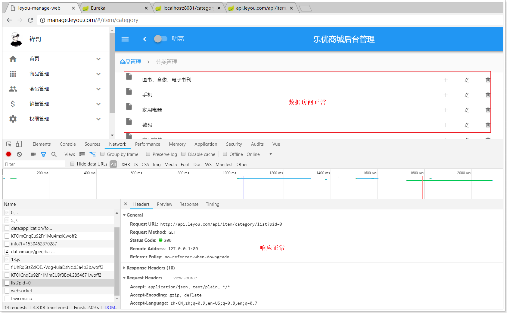
分类的增删改功能暂时就不做了，页面已经预留好了事件接口，有兴趣的同学可以完成一下。
4.品牌的查询
商品分类完成以后，自然轮到了品牌功能了。
先看看我们要实现的效果：
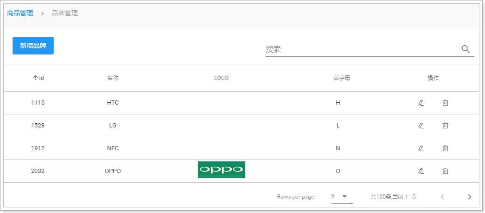
点击“品牌管理”菜单：
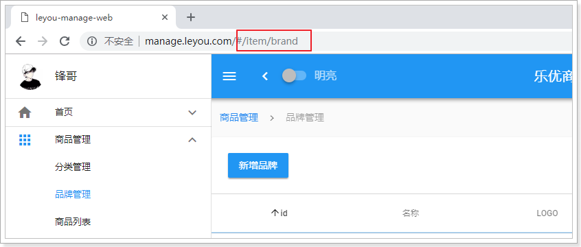
路由路径：/item/brand
根据路由文件知，对应的页面是：src/pages/item/Brand.vue
页面会发送如下请求：
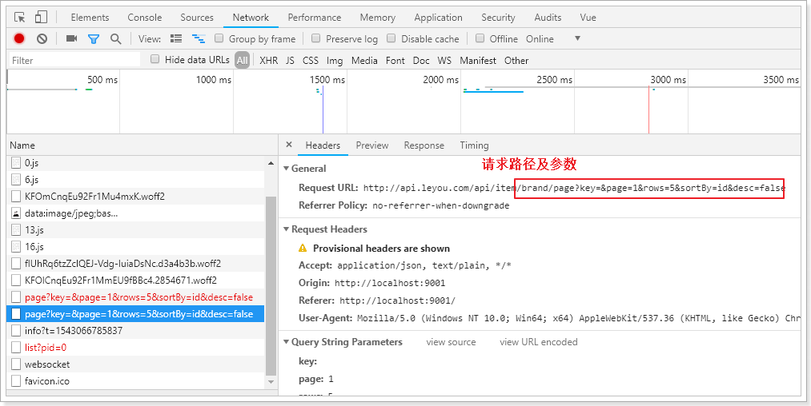
4.1.后台提供查询接口
前台页面已经准备好，接下来就是后台提供数据接口了。
4.1.1.数据库表
CREATE TABLE `tb_brand` (
`id` bigint(20) NOT NULL AUTO_INCREMENT COMMENT '品牌id',
`name` varchar(50) NOT NULL COMMENT '品牌名称',
`image` varchar(200) DEFAULT '' COMMENT '品牌图片地址',
`letter` char(1) DEFAULT '' COMMENT '品牌的首字母',
PRIMARY KEY (`id`)
) ENGINE=InnoDB AUTO_INCREMENT=325400 DEFAULT CHARSET=utf8 COMMENT='品牌表，一个品牌下有多个商品（spu），一对多关系';
简单的四个字段，不多解释。
这里需要注意的是，品牌和商品分类之间是多对多关系。因此我们有一张中间表，来维护两者间关系：
CREATE TABLE `tb_category_brand` (
`category_id` bigint(20) NOT NULL COMMENT '商品类目id',
`brand_id` bigint(20) NOT NULL COMMENT '品牌id',
PRIMARY KEY (`category_id`,`brand_id`)
) ENGINE=InnoDB DEFAULT CHARSET=utf8 COMMENT='商品分类和品牌的中间表，两者是多对多关系';
但是，你可能会发现，这张表中并没有设置外键约束，似乎与数据库的设计范式不符。为什么这么做？
- 外键会严重影响数据库读写的效率
- 数据删除时会比较麻烦
在电商行业，性能是非常重要的。我们宁可在代码中通过逻辑来维护表关系，也不设置外键。
4.1.2.实体类

@Table(name = "tb_brand")
public class Brand {
@Id
@GeneratedValue(strategy = GenerationType.IDENTITY)
private Long id;
private String name;// 品牌名称
private String image;// 品牌图片
private Character letter;
// getter setter 略
}
4.1.3.mapper

通用mapper来简化开发：
public interface BrandMapper extends Mapper<Brand> {
}
4.1.4.controller
编写controller先思考四个问题，参照前端页面的控制台
- 请求方式：查询，肯定是Get
- 请求路径：分页查询，/brand/page
- 请求参数：根据我们刚才编写的页面，有分页功能，有排序功能，有搜索过滤功能，因此至少要有5个参数：
- page：当前页，int
- rows：每页大小，int
- sortBy：排序字段，String
- desc：是否为降序，boolean
- key：搜索关键词，String
- 响应结果：分页结果一般至少需要两个数据
- total：总条数
- items：当前页数据
- totalPage：有些还需要总页数
这里我们封装一个类，来表示分页结果：
public class PageResult<T> {
private Long total;// 总条数
private Integer totalPage;// 总页数
private List<T> items;// 当前页数据
public PageResult() {
}
public PageResult(Long total, List<T> items) {
this.total = total;
this.items = items;
}
public PageResult(Long total, Long totalPage, List<T> items) {
this.total = total;
this.totalPage = totalPage;
this.items = items;
}
public Long getTotal() {
return total;
}
public void setTotal(Long total) {
this.total = total;
}
public List<T> getItems() {
return items;
}
public void setItems(List<T> items) {
this.items = items;
}
public Long getTotalPage() {
return totalPage;
}
public void setTotalPage(Long totalPage) {
this.totalPage = totalPage;
}
}
另外，这个PageResult以后可能在其它项目中也有需求，因此我们将其抽取到leyou-common中，提高复用性：
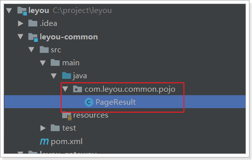
不要忘记在leyou-item-service工程的pom.xml中引入leyou-common的依赖：
<dependency>
<groupId>com.leyou.common</groupId>
<artifactId>leyou-common</artifactId>
<version>1.0.0-SNAPSHOT</version>
</dependency>
接下来，我们编写Controller
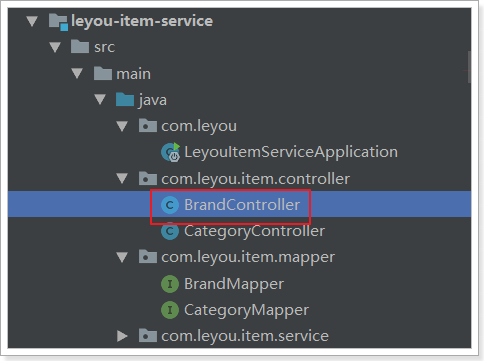
@RestController
@RequestMapping("brand")
public class BrandController {
@Autowired
private BrandService brandService;
/**
* 根据查询条件分页并排序查询品牌信息
* @param key
* @param page
* @param rows
* @param sortBy
* @param desc
* @return
*/
@GetMapping("page")
public ResponseEntity<PageResult<Brand>> queryBrandsByPage(
@RequestParam(value = "key", required = false)String key,
@RequestParam(value = "page", defaultValue = "1")Integer page,
@RequestParam(value = "rows", defaultValue = "5")Integer rows,
@RequestParam(value = "sortBy", required = false)String sortBy,
@RequestParam(value = "desc", required = false)Boolean desc
){
PageResult<Brand> result = this.brandService.queryBrandsByPage(key, page, rows, sortBy, desc);
if (CollectionUtils.isEmpty(result.getItems())){
return ResponseEntity.notFound().build();
}
return ResponseEntity.ok(result);
}
}
4.1.5.Service
@Service
public class BrandService {
@Autowired
private BrandMapper brandMapper;
/**
* 根据查询条件分页并排序查询品牌信息
*
* @param key
* @param page
* @param rows
* @param sortBy
* @param desc
* @return
*/
public PageResult<Brand> queryBrandsByPage(String key, Integer page, Integer rows, String sortBy, Boolean desc) {
// 初始化example对象
Example example = new Example(Brand.class);
Example.Criteria criteria = example.createCriteria();
// 根据name模糊查询，或者根据首字母查询
if (StringUtils.isNotBlank(key)) {
criteria.andLike("name", "%" + key + "%").orEqualTo("letter", key);
}
// 添加分页条件
PageHelper.startPage(page, rows);
// 添加排序条件
if (StringUtils.isNotBlank(sortBy)) {
example.setOrderByClause(sortBy + " " + (desc ? "desc" : "asc"));
}
List<Brand> brands = this.brandMapper.selectByExample(example);
// 包装成pageInfo
PageInfo<Brand> pageInfo = new PageInfo<>(brands);
// 包装成分页结果集返回
return new PageResult<>(pageInfo.getTotal(), pageInfo.getList());
}
}
4.1.6.测试
通过浏览器访问试试：http://api.leyou.com/api/item/brand/page

接下来，去页面请求数据并渲染
4.2.异步查询工具axios
异步查询数据，自然是通过ajax查询，大家首先想起的肯定是jQuery。但jQuery与MVVM的思想不吻合，而且ajax只是jQuery的一小部分。因此不可能为了发起ajax请求而去引用这么大的一个库。
4.2.1.axios入门
Vue官方推荐的ajax请求框架叫做：axios，看下demo：

axios的Get请求语法：
axios.get("/item/category/list?pid=0") // 请求路径和请求参数拼接
.then(function(resp){
// 成功回调函数
})
.catch(function(){
// 失败回调函数
})
// 参数较多时，可以通过params来传递参数
axios.get("/item/category/list", {
params:{
pid:0
}
})
.then(function(resp){})// 成功时的回调
.catch(function(error){})// 失败时的回调
axios的POST请求语法：
比如新增一个用户
axios.post("/user",{
name:"Jack",
age:21
})
.then(function(resp){})
.catch(function(error){})
注意，POST请求传参，不需要像GET请求那样定义一个对象，在对象的params参数中传参。post()方法的第二个参数对象，就是将来要传递的参数
PUT和DELETE请求与POST请求类似
4.2.2.axios的全局配置
而在我们的项目中，已经引入了axios，并且进行了简单的封装，在src下的http.js中：
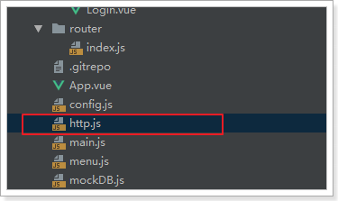
http.js中对axios进行了一些默认配置：
import Vue from 'vue'
import axios from 'axios'
import config from './config'
// config中定义的基础路径是：http://api.leyou.com/api
axios.defaults.baseURL = config.api; // 设置axios的基础请求路径
axios.defaults.timeout = 2000; // 设置axios的请求时间
Vue.prototype.$http = axios;// 将axios赋值给Vue原型的$http属性，这样所有vue实例都可使用该对象
http.js中导入了config的配置，还记得吗？

http.js对axios进行了全局配置：
baseURL=config.api，即http://api.leyou.com/api。因此以后所有用axios发起的请求，都会以这个地址作为前缀。通过
Vue.property.$http = axios，将axios赋值给了 Vue原型中的$http。这样以后所有的Vue实例都可以访问到$http，也就是访问到了axios了。
4.2.3.项目中使用
我们在组件Brand.vue的getDataFromServer方法，通过$http发起get请求，测试查询品牌的接口，看是否能获取到数据：
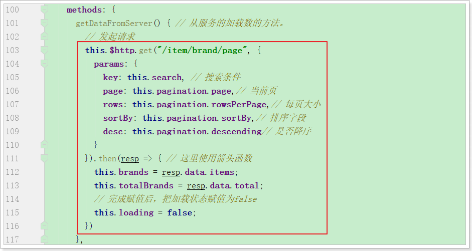
网络监视：

resp到底都有那些数据，查看控制台结果：
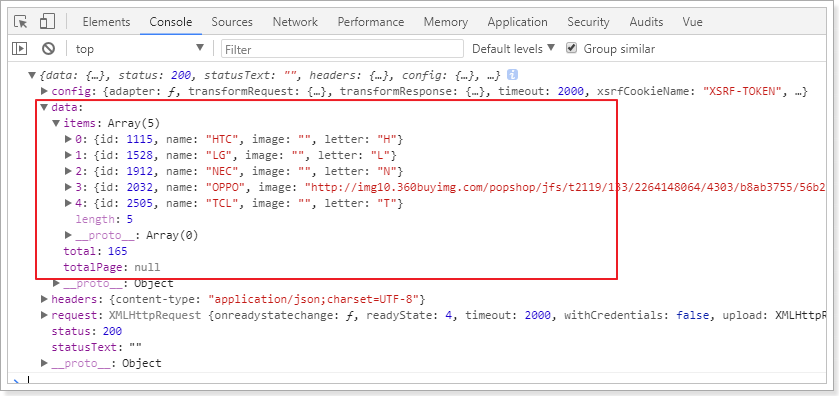
可以看到，在请求成功的返回结果response中，有一个data属性，里面就是真正的响应数据。
响应结果中与我们设计的一致，包含3个内容：
- total：总条数，目前是165
- items：当前页数据
- totalPage：总页数，我们没有返回
4.3.完成分页和过滤
4.3.1.分页
点击分页，会发起请求，通过浏览器工具查看，会发现pagination对象的属性一直在变化：
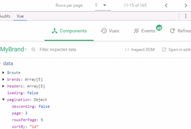
我们可以利用Vue的监视功能：watch，当pagination发生改变时，会调用我们的回调函数，我们在回调函数中进行数据的查询！
具体实现：

成功实现分页功能：

4.3.2.过滤
过滤字段对应的是search属性，我们只要监视这个属性即可:

查看网络请求：
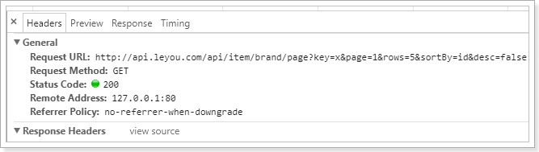
页面结果：